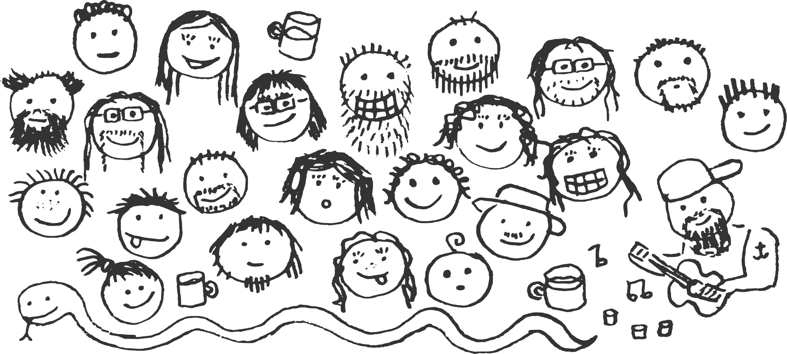

Zapoj se!#
Líbí se ti Python? Pomoz nám ho rozšířit i mezi ostatní. Můžeš nám poslat peníze, učit, přednášet, psát, organizovat, programovat, ale třeba i jen vymýšlet, co a jak by se dalo zlepšit. Máme práci pro každého!

Proč?#
Python komunita je fajn jen díky tomu, že jsou v ní lidi, kteří se nebojí přiložit ruku k dílu. Všichni to děláme po večerech ve volném čase, z čirého nadšení. Děláme to proto, že chceme, aby to bylo lepší i pro tebe. Ať jsi profík nebo začátečník, z Prahy nebo z Karviné, můžeš nám pomoci. Odměnou ti budou kontakty, reference, zkušenosti.
Přispěj#
Budeme rádi, když přispěješ na provoz neziskovky Pyvec, jejíž misí je podporovat a propagovat Python komunitu v ČR.
Srazy nebo workshopy dělají konkrétní lidé a Pyvec jim do toho nemluví - nabízí ale pomocnou ruku co se týče financí a zázemí.
Vyučuj#
- Přidej se na skupiny Učíme Python: Facebook, Google Groups.
- Koučuj pro PyLadies.
- Rozjeď kurz pro začátečníky podle našeho návodu. Použij a vylepšuj naše Open Source materiály.
- Přečti si tipy na koučování od Django Girls.
Přednášej#
- Přihlaš se s přednáškou na nejbližší sraz.
- Pokud se necítíš na 15-20 minut, připrav si tzv. lightning talk. Je to pětiminutovka o čemkoliv a můžeš s ní přijít na srazy přijít i bez ohlášení.
- Koukni se, jestli zrovna nehledají řečníky PyCon CZ nebo PyCon SK. Na mnohé konference se může přihlásit s přednáškou kdokoliv, stačí vyplnit formulář – tzv. CfP (Call for Proposals).
Piš#
- Poděl se o zážitky z akcí nebo o svůj životní příběh na komunitní blog.
- Technické články piš např. na Zdroják.cz. Redakce bude nadšená a ty budeš mít větší publikum.
- Python učíme podle Open Source materiálů. Můžeš nám pomoci je vylepšovat.
- Když se nám povede něco zorganizovat, snažíme se sepsat naše know-how do komunitní dokumentace. Chybí tam ještě spousta věcí!
Organizuj#
- Pokud ve tvém městě není Python sraz nebo třeba PyLadies skupina, tak gratulujeme: Můžeš je založit! Jestliže už se kolem tebe něco koná, nejlepší bude, když se spojíš s organizátory a zeptáš se, jak jim můžeš pomoci.
- Každoročně sháníme dobrovolníky na konferenci PyCon CZ. Potřebné činnosti mají většinou pramálo společného s Pythonem a programováním.
- Když se nám povede něco zorganizovat, snažíme se sepsat naše know-how do komunitní dokumentace.
- Všechny důležité věci řešíme na Slacku. Napiš nám na info@pyvec.org, my tě přidáme, pak můžeš pokukovat co se v jaké místnosti řeší a brzy uvidíš, kde je tvoje pomoc nejvíc potřeba.
- Máme neziskovku Pyvec. Její misí je podporovat a propagovat Python komunitu v ČR. Srazy nebo workshopy dělají lidé jako ty a Pyvec jim do toho nemluví - nabízí ale pomocnou ruku co se týče financí a zázemí.
Další nápady#
Pro organizaci jednorázových úkolů používáme GitHub. Když nic, tak aspoň hlasuj nebo přidej vlastní nápad. Díky hlasům budeme mít přinejmenším přehled o tom, co si přeje nejvíc lidí.
Značka Kouč pomůže! znamená, že někdo navrhl, že ti s úkolem pomůže, pokud se do něj pustíš. Jestli se ty chceš někde navrhnout jako kouč, napiš to do komentáře pod daný úkol a přiřaď mu štítek
TODO - zrušit, možná udělat jen seznam organizací nebo repozitářů